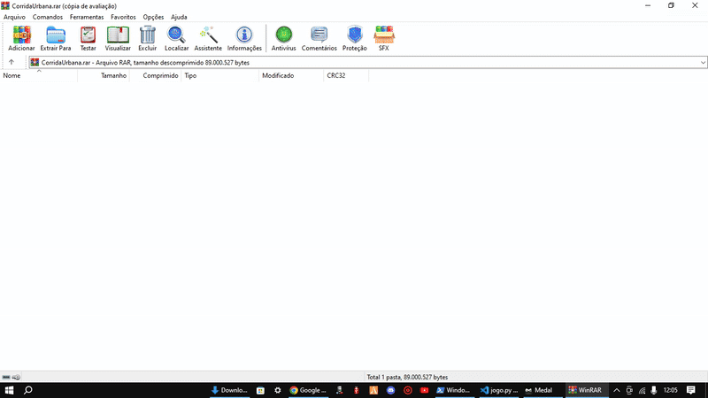

Projetos em Destaque
Jogo em Python — Corrida Urbana (Endless Runner)
Tecnologias: Python, Pygame, JSON
Jogo desenvolvido em Python utilizando a biblioteca Pygame, com implementação de lógica de colisão, progressão de dificuldade e sistema de ranking local com persistência de dados em arquivos JSON.
Economia Inteligente
Ver ProjetoTecnologias: HTML, CSS, JavaScript
Aplicação web para planejamento financeiro pessoal, permitindo o cálculo do tempo necessário para atingir metas financeiras, com tabelas interativas e exportação de dados.

Projeto Dragon Ball — Estudo de Interface
Ver ProjetoTecnologias: HTML, CSS, JavaScript
Projeto focado em manipulação de DOM, eventos JavaScript e estilização avançada com CSS, explorando conceitos de usabilidade e interação com o usuário.